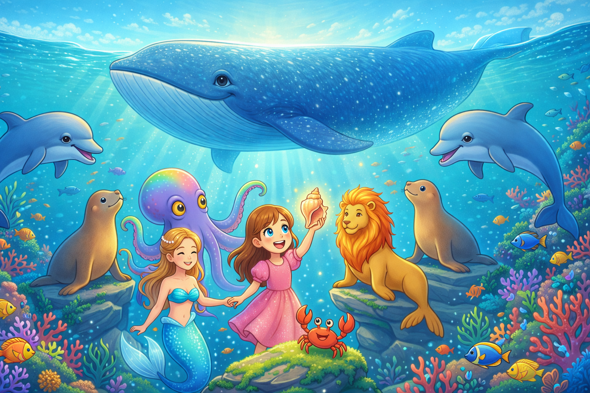

⏱️ Lesezeit Blog: 4 Min.
⚓ Abenteuerliche Gute Nacht Geschichte:
So entstand das Kinderbuch und Hörbuch Ayanas Abenteuer auf hoher See für die Toniebox
Genre: Abenteuer / Gute-Nacht-Geschichte
Format: Hörbuch für Toniebox (Kreativ Tonie) & Spotify
Hörbuch-Dauer: ca. 34 Minuten
Besonderheit: Individuelle Stimmen für jede Figur
Inzwischen ist die Hörspiel-Produktion zu meiner echten Leidenschaft geworden. Den passenden Score für jede Szene zu finden, ihn stimmig einzufügen und mit den richtigen Soundeffekten Gänsehaut zu erzeugen: Genau das treibt mich an. Deshalb war die Produktion des Hörbuchs zu Ayanas zweitem Abenteuer für mich Pflicht und Freude zugleich.
🧜♀️ Eine Heldenreise übers Ozean: Fabelwesen, Piraten und ein unterschätztes See-Ungeheuer
Wie immer folgt die Geschichte einer klassischen Heldenreise, diesmal jedoch auf den sieben Weltmeeren. Da ich das Meer liebe und selbst leidenschaftlich tauche, war das Ausarbeiten dieser Geschichte ein echter Genuss. Auch hier durften Fabelwesen und Mentoren-Figuren nicht fehlen: Eine Meerjungfrau war für mich bei einer solchen Geschichte für Mädchen einfach ein Muss. Dazu kommen ein goldener Seelöwe, der einem echten Löwen erstaunlich ähnlich sieht, Delfine, Seehunde und ein Wal, den Kinder einfach großartig finden.

Auch den Kraken habe ich bewusst eingebaut, um ein eigentlich „furchteinflößendes" Tier positiv darzustellen. Am liebsten hätte ich auch noch einen Hai eingebaut, denn auch er wird oft zu Unrecht als blutrünstige Bestie dargestellt und macht Kindern unnötig Angst. Diesmal passte er aber einfach nicht in die Handlung, das hebe ich mir für ein weiteres Abenteuer auf. Als Bösewichte dienen die Piraten: Auch wenn sie in manchen Kindergeschichten als Helden auftreten, bleiben sie unterm Strich Seeräuber. Mir war es wichtig, wieder bleibende Botschaften wie Mut, Freundschaft und Zusammenhalt gegen Egoismus zu vermitteln, und auf dem Meer durfte natürlich auch der Meeresschutz nicht fehlen. Mit der Schildkröte konnte ich diesen geschickt einbauen, basierend auf eigener Erfahrung, die ich beim Tauchen selbst leider schon erlebt habe.
🎶 Klänge der Karibik: Musik und Sounddesign für das Meeresabenteuer
Anders als im ersten Teil, der noch ganz im Zeichen des Zauberwalds und seiner Märchenstimmung stand, brauchte diese Geschichte einen völlig neuen Klang. Diesmal sollte es nach Meer und Wasser klingen, mit Anlehnung an Hawaii oder die Karibik. Das passte wunderbar und setzt sich klar vom ersten Hörbuch ab. Nur war es gar nicht so leicht, passende Klänge zu finden: Auf Freesound.org gab es kaum brauchbare Samples. Deshalb entschied ich mich, die Musik selbst zu komponieren, mit ElevenLabs. Da ich selbst genau wusste, welche Instrumente, welche Melodien und welche Stimmung zu jeder Szene passen sollten, zum Beispiel bewusst ohne Drums und Bass, da diese in einem Hörspiel stören würden, habe ich diese Vorgaben in Gemini eingegeben, um daraus präzise Prompts für ElevenLabs zu formulieren. So entstanden für jede Szene stimmige Musik-Samples, die ich Kapitel für Kapitel abspeicherte und mit den passenden Geräuschen von Freesound ergänzte, etwa Wasser- und Tiergeräusche.
Ein schöner Nebeneffekt: Da am Meer naturgemäß viele Wassergeräusche wie Wellenrauschen vorkommen, habe ich diese gezielt eingebaut, um die Atmosphäre des Ozeans greifbar zu machen. Meeresrauschen wird außerdem häufig zum Einschlafen verwendet, perfekt also für eine Gute-Nacht-Geschichte, bei der die Kinder beim Zuhören ganz friedlich einschlafen können.
🦀 Neue Stimmen für Freunde und Schurken der Tiefsee
Auch diesmal brauchte jede Figur ihre eigene Stimme. Die Stimmen von Ayana, Papa und Mama kannte ich bereits aus dem ersten Hörbuch. Neu hinzu kamen gleich drei unterschiedliche Schurkenstimmen für die Piraten, damit genügend Abwechslung entsteht. Dazu kamen majestätische Stimmen für die Meerjungfrau, den goldenen Seelöwen, den Wal und den Kraken: Einige Fabelwesen-Stimmen konnte ich aus Teil eins übernehmen, für die übrigen musste ich erst die passenden finden, was einige Hörproben brauchte.
Bei der unverkennbaren Comicrelief-Stimme der Krabbe Klick-Klack war ich anfangs noch nicht überzeugt von der ersten Hörprobe. Erst als ich sie verschiedene Sätze einsprechen ließ, zeigte sich, wie grandios diese Stimme wirklich ist. Genau wie Tilly im ersten Teil mit ihrer Stimme eine Figur zum Leben erweckt hatte, wird Klick-Klack in diesem Hörbuch zum absoluten Scene Stealer.

Bist du neugierig auf die Performance von Klick-Klack? Dann hör dir die Hörprobe aus Kapitel 2 an: seinen ersten Auftritt im Seeabenteuer, inklusive Score und Wassergeräuschen.
🌍 Der Weg zur Veröffentlichung der Gute-Nacht-Geschichte: Spotify, Google Play Books und weitere Anbieter
Da meine Erfahrungen mit Spotify beim ersten Hörbuch durchwegs positiv waren und der Prozess unkompliziert war, entschied ich mich, auch dieses Hörbuch dort zu veröffentlichen, allerdings vor allem für die Sichtbarkeit. Viel verdienen lässt sich über Spotify nämlich kaum, da die Geschichte im Abo gehört und nicht einzeln gekauft wird, auch wenn man formal einen Preis hinterlegen muss. Die Tantiemen daraus sind entsprechend gering.
Zusätzlich habe ich das Hörbuch bei Google Play Books aufgeschaltet, wobei die Prüfung und Freischaltung dort einige Zeit in Anspruch nahm. Um möglichst viele Hörerinnen und Hörer zu erreichen, habe ich mich zudem für eine Veröffentlichung über den Distributor Voices by Inaudio entschieden. Beim Hochladen bin ich dort allerdings auf eine hartnäckige Schwierigkeit gestoßen. Die Datei ließ sich zwar hochladen, doch danach ging es nicht weiter: Bei jeder Aktualisierung erschien ein Fehler, obwohl ich das LPF-Format mehrfach an die Vorgaben angepasst hatte, etwa bei Intro, Outro und den Pausen. Aktuell warte ich nach dem Upload erst einmal ein paar Stunden ab, vielleicht dauert die Prüfung der Datei tatsächlich so lange, auch wenn mir das für einen digitalen Dienst in der heutigen Zeit persönlich doch recht lang erscheint.
🎧 Ein einzigartiges Märchen Hörbuch auch für die Toniebox
Das Märchen Hörbuch gibt's in zwei Varianten:
- 🎧 Klassisch: Mit verschiedenen Stimmen als wärst du mitten im Abenteuer.
- 🎬 Cineastisch: Mit atmosphärischer Musik, immersiven Soundeffekten und individuellen Stimmen für jede Figur.
Beide Versionen sind als MP3 erhältlich und funktionieren mit einem Kreativ-Tonie auch auf der beliebten Toniebox.
🎬 Erlebe noch mehr Magie auf YouTube:

❤️ Danke fürs Lesen! Ich freue mich über jedes Feedback, Kommentare und Unterstützung!
👉 Neugierig geworden? Entdecke hier Ayanas neues Abenteuer:
Ayanas Abenteuer: Der Schatz der Freundschaft